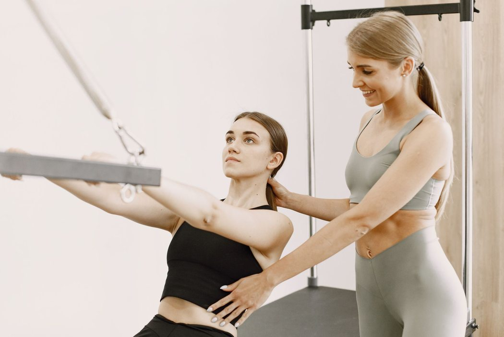

1
Deixe seu contato
Informe seu nome e WhatsApp para registrar sua solicitação.
Conheça o FormaCerta, faça sua primeira avaliação postural gratuita e descubra opções de acompanhamento com profissionais.
Fotografias reais de academia, utilizadas de forma ilustrativa. Conheça a plataforma antes de se cadastrar.

Deixe seu contato para começar. Em seguida, crie sua conta de aluno no aplicativo e siga as instruções.
Sem compromisso de contratação. Você decide se quer receber ofertas.
Seu contato está salvo no FormaCerta. Para receber orientação, inicie uma conversa voluntariamente pelo WhatsApp:
Conversar no WhatsApp →Também é possível seguir diretamente para o aplicativo.
Prefere seguir por conta própria?
Continuar no FormaCerta →O cadastro no app pode exigir confirmação de e-mail e, para profissionais, conferência dos dados.
Conheça os passos antes de começar.
Informe seu nome e WhatsApp para registrar sua solicitação.
Entre no aplicativo e confirme o seu e-mail.
Siga as instruções e comece sua primeira avaliação grátis.
No FormaCerta existe uma Vitrine com fotos de treinos e evolução enviadas pelos participantes e aprovadas antes de aparecer no aplicativo. Elas são exibidas dentro da plataforma, conforme a autorização de cada pessoa.
As imagens abaixo são fotografias ilustrativas de academia. Fotos de participantes serão publicadas aqui somente mediante autorização específica para divulgação externa.
Conhecer o aplicativo e a VitrineUma plataforma para avaliação postural, acompanhamento de exercícios e conexão com profissionais. Conheça os recursos reais do app antes de decidir contratar serviços.
O FormaCerta não substitui diagnóstico ou atendimento clínico. As fotografias mostram situações de treino, não resultados de clientes.
Quero começar →Não para a primeira avaliação gratuita. Recursos adicionais e acompanhamento profissional podem ter cobrança.
Não. A avaliação é informativa e não substitui diagnóstico ou atendimento clínico.